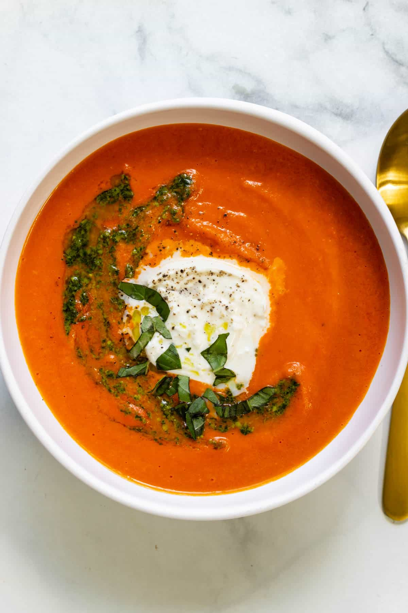

Roasted Red Pepper and Tomato Soup

Delicious roasted red pepper soup - perfect during our crap Canadian winters!
The history of roasted red pepper soup is one accompanied by your typical BS included in recipe nowadays, I mean why not just include the ingredients and the instructions front and center? I really don't care about the cultural underpinnings or other social associations of soup - I just want to make it and eat it!
So the soup is really great, or looks it at least, I mean look at the picture of the one I Goo--er, made from scratch. (Does the recipe I'm including even have anything cream-based? I'm not sure, haven't looked at it yet.)
Ah yes, there's the sour cream, just did the ingredients portion and, sure enough, there it is! Right on. But now that I think about it I don't see any fresh herbs like you see in the picture. Oh well.
Ingredients
- 1 teaspoon olive oil
- 1 onion, chopped
- 2 cloves garlic, minced
- 3 red bell peppers
- 4 large tomatoes - peeled, seeded and chopped
- 1 ½ teaspoons dried thyme
- 2 teaspoons paprika
- ⅛ teaspoon white sugar
- 6 cups chicken broth
- salt and pepper to taste
- 1 pinch ground cayenne pepper
- 1 dash hot pepper sauce
- 2 tablespoons butter
- 1 ½ tablespoons all-purpose flour
- 6 tablespoons sour cream
Steps
- Roast peppers: rub oil on peppers and put them under the broiler until blackened, turn to get all sides. Put into paper
bag and seal. Let rest for 15 minutes, then peel will come right off and core and seeds will fall out. Chop peppers.
Reserve one chopped pepper; set aside.
- Heat olive oil over moderate heat. Add onion and garlic and cook until soft but not brown, about 5 minutes. Stir in
tomato, bell peppers (except reserved), thyme, paprika, and sugar. Cook over medium-low heat until all the tomato juices
have evaporated, about 25 minutes.
- Stir in chicken stock, salt and pepper, cayenne pepper, and hot sauce (if using). Bring to boiling, lower heat, and
simmer, partially covered, for 25 minutes or until vegetables are tender.
- Strain soup, reserving broth. Place solids in food processor or blender, and process until fairly smooth. Add puree back
into broth.
- Melt butter and stir in the flour, cook for 1 minute. Stirring slowly, add the broth/vegetable mixture. Add reserved
chopped pepper and bring to boiling. Lower heat and simmer 10 minutes.
- Ladle into bowls and add 1 tablespoon of sour cream to each bowl. For a lighter soup, this is also delicious without the
sour cream.